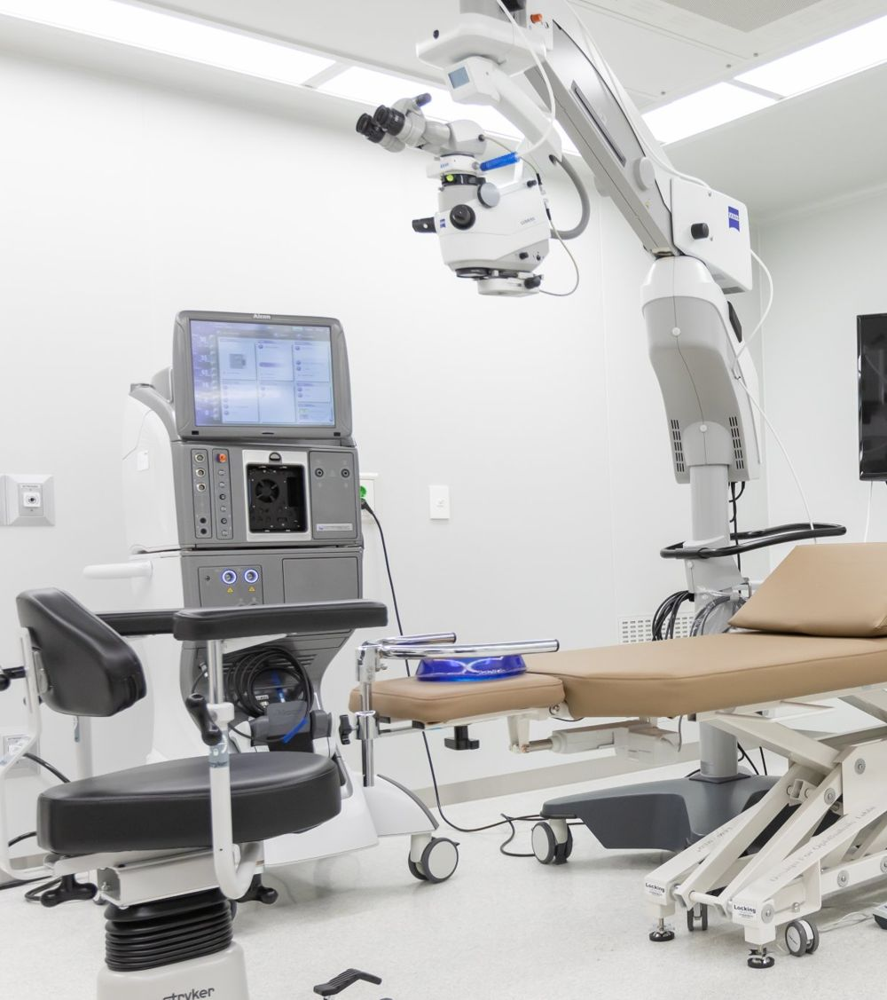

연세 오늘안과YONSEI TODAY EYE CLINIC
연세 오늘안과YONSEI TODAY EYE CLINIC
SURGERY & TREATMENT
수술 / 치료안내

CATARACT SURGERY
백내장 수술 특화 장비
Alcon Centurion
오늘안과는 백내장 수술에 특화된 장비인 Alcon Centurion으로 백내장 수술을 합니다. 혼탁해진 수정체를 초음파로 잘게 부수어 흡인하는 동안, 눈 속 환경을 안정적으로 유지하도록 돕는 장비입니다.
- 수술 전 안구 계측 장비 Argos로 안구 길이와 각막 곡률을 측정해 인공수정체 도수를 계산합니다. Argos · 강원도 최초 도입 · 강원도 유일
- Lumera 700 수술현미경으로 수술 부위를 확대해 보며 수술합니다.
- 망막 · 황반 질환이 함께 있는 합병 백내장도 망막 진료와 함께 살핍니다.

RETINA SURGERY
망막 수술 특화 장비
Alcon Constellation
원주 최초 도입 · 원주 유일
망막 · 유리체 수술에 특화된 통합 수술 장비 Alcon Constellation을 원주에서 처음 도입했습니다. 원주에서 이 장비를 갖춘 곳은 오늘안과뿐입니다.
- 망막박리, 황반원공, 망막전막, 유리체출혈 등 망막 · 유리체 질환 수술에 사용합니다.
- 대학병원 안과 교수 출신 원장이 직접 수술합니다.
- 4시 이전 내원 시 진료 결과에 따라 당일 응급 수술이 가능합니다.

INTRAVITREAL INJECTION
편하게 앉아서 맞는
망막 주사
황반변성, 당뇨망막병증 등으로 망막 주사를 맞으시는 분들을 위해 별도의 주사실을 마련했습니다. 편안한 리클라이너 의자에 앉아, 긴장하지 않고 편하게 주사를 맞으실 수 있습니다.
- 주사실 안에 의약품 전용 냉장고를 두어 주사약을 정해진 온도로 보관합니다.
- 주사 후 경과는 OCT 등 정밀 검사 장비로 꾸준히 확인합니다.
CONTACT